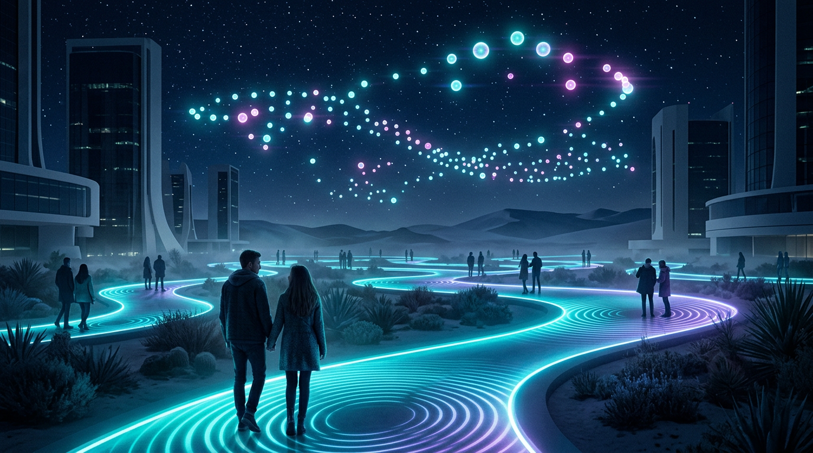

El Núcleo- La Noche de Sincronización BioluminiscenteLa Noche de Sincronización Bioluminiscente
Mother-0 apaga las luces artificiales del distrito y activa los senderos del Jardín de Latencias con nanobiotics sensibles al ritmo cardíaco. Humanos y androides presentes sincronizan su latido colectivo para generar un juego de luces en el cielo, en una experiencia de paz visual total en El Núcleo.